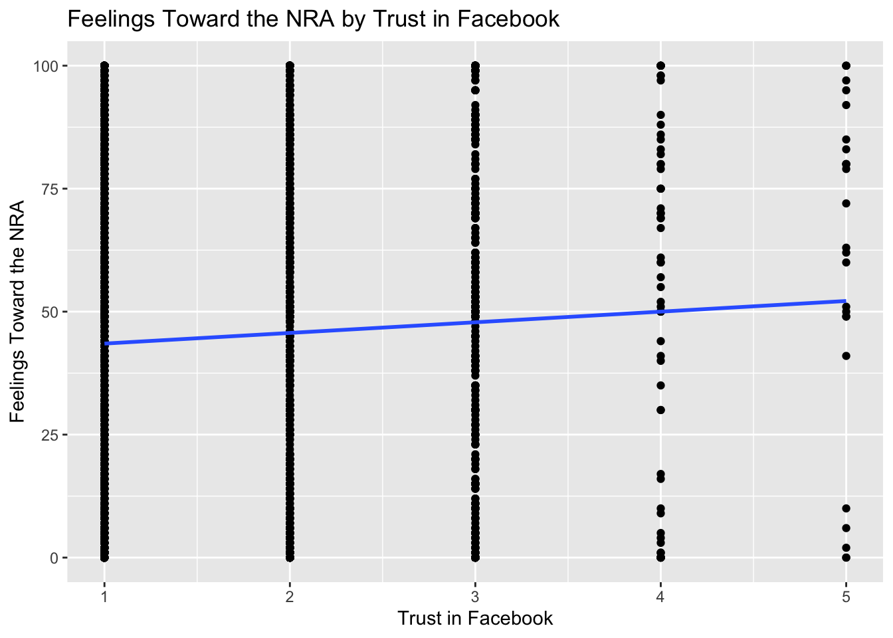

Portfolio
Coursework
STA4241: Statistical Learning
Spring 2022
Homework #1
Question 1
To find the least squares solution for \(\beta_0\) and \(\beta_1\) in simple linear regression, we must minimize the sum of squared residuals for \(Y=\beta_0+\beta_1X\) by minimizing \(\sum_{i=1}^n(Y_i-(\hat{\beta}_0+\hat{\beta}_1X_i))^2\). To begin, we will minimize the function with respect to \(\hat{\beta}_0\): \[\frac{\partial}{\partial\hat{\beta}_0}\sum_{i=1}^n(Y_i-(\hat{\beta}_0+\hat{\beta}_1X_i))^2=\sum_{i=1}^n\frac{\partial}{\partial\hat{\beta}_0}(Y_i-(\hat{\beta}_0+\hat{\beta}_1X_i))^2\] \[=\sum_{i=1}^n2(Y_i-(\hat{\beta}_0+\hat{\beta}_1X_i))(-1)=-2\sum_{i=1}^n(Y_i-(\hat{\beta}_0+\hat{\beta}_1X_i))\] Next, we will solve for \(\hat{\beta}_0\) when the derivative equals 0: \[-2\sum_{i=1}^n(Y_i-(\hat{\beta}_0+\hat{\beta}_1X_i))=0\Rightarrow\sum_{i=1}^n(Y_i-(\hat{\beta}_0+\hat{\beta}_1X_i))=0\] \[=\sum_{i=1}^nY_i-\sum_{i=1}^n\hat{\beta}_0-\sum_{i=1}^n\hat{\beta}_1X_i=\sum_{i=1}^nY_i-n\hat{\beta}_0-\hat{\beta}_1\sum_{i=1}^nX_i=0\] \[n\hat{\beta}_0=\sum_{i=1}^nY_i-\hat{\beta}_1\sum_{i=1}^nX_i\] \[\hat{\beta}_0=\bar{Y}-\hat{\beta}_1\bar{X}\] Thus, the least squares solution for \(\beta_0\) is \(\hat{\beta}_0=\bar{Y}-\hat{\beta}_1\bar{X}\). Next, we will minimize \(\sum_{i=1}^n(Y_i-(\hat{\beta}_0+\hat{\beta}_1X_i))^2\) with respect to \(\hat{\beta}_1\): \[\frac{\partial}{\partial\hat{\beta}_1}\sum_{i=1}^n(Y_i-(\hat{\beta}_0+\hat{\beta}_1X_i))^2=\sum_{i=1}^n\frac{\partial}{\partial\hat{\beta}_1}(Y_i-(\hat{\beta}_0+\hat{\beta}_1X_i))^2\] \[=\sum_{i=1}^n2(Y_i-(\hat{\beta}_0+\hat{\beta}_1X_i))(-X_i)=-2\sum_{i=1}^nX_i(Y_i-(\hat{\beta}_0+\hat{\beta}_1X_i))\] Next, we will solve for \(\hat{\beta}_1\) when the derivative equals 0: \[-2\sum_{i=1}^nX_i(Y_i-(\hat{\beta}_0+\hat{\beta}_1X_i))=0\Rightarrow\sum_{i=1}^nX_i(Y_i-(\hat{\beta}_0+\hat{\beta}_1X_i))=0\] Since we know that \(\hat{\beta}_0=\bar{Y}-\hat{\beta}_1\bar{X}\), we can substitute it into the above equation and get \[\sum_{i=1}^nX_i(Y_i-(\bar{Y}-\hat{\beta}_1\bar{X}+\hat{\beta}_1X_i))=\sum_{i=1}^nX_i(Y_i-\bar{Y}-\hat{\beta}_1(X_i-\bar{X}))\] \[=\sum_{i=1}^nX_i(Y_i-\bar{Y})-\sum_{i=1}^n\hat{\beta}_1X_i(X_i-\bar{X})=0\] \[\sum_{i=1}^nX_i(Y_i-\bar{Y})=\hat{\beta}_1\sum_{i=1}^nX_i(X_i-\bar{X})\Rightarrow\hat{\beta}_1=\frac{\sum_{i=1}^nX_i(Y_i-\bar{Y})}{\sum_{i=1}^nX_i(X_i-\bar{X})}\] \[\hat{\beta}_1=\frac{\sum_{i=1}^n(X_i-\bar{X})(Y_i-\bar{Y})}{\sum_{i=1}^n(X_i-\bar{X})^2}\] Thus, the least squares solution for \(\beta_1\) is \(\hat{\beta}_1=\frac{\sum_{i=1}^n(X_i-\bar{X})(Y_i-\bar{Y})}{\sum_{i=1}^n(X_i-\bar{X})^2}\).
Question 2
If we use the Bayes classifier using the known probability above, we expect the error rates to be similar between the training and test data sets because they follow the same distribution.
The error rate for the training data is
yhat_train = as.numeric(pnorm(0.5*x1[1:500] - 0.4*x2[1:500]) >= 0.5)
mean(y[1:500] != yhat_train)## [1] 0.328The error rate for the testing data is
yhat_test = as.numeric(pnorm(0.5*x1[501:1000] - 0.4*x2[501:1000]) >= 0.5)
mean(y[501:1000] != yhat_test)## [1] 0.312- The test error rate when using KNN with \(k = 3\) to classify the outcomes in the test data set is
knnTrain = cbind(x1[1:500], x2[1:500])
knnTest = cbind(x1[501:1000], x2[501:1000])
knnMod = knn(train=knnTrain, test=knnTest, k=3, cl=y[1:500])
knnPred = as.numeric(knnMod) - 1
mean(knnPred != y[501:1000])## [1] 0.386Given the test error rate in part (iii) and the error rates found in part (ii), I do not think \(k=3\) is the best choice of \(k\) because it has a greater error rate than the Bayes classifier.
The plot showing the test error rate as a function of \(k\) is below.
error_vals = 0
for (k_val in 1:50) {
knnMod = knn(train=knnTrain, test=knnTest, k=k_val, cl=y[1:500])
knnPred = as.numeric(knnMod) - 1
error_vals[k_val] = mean(knnPred != y[501:1000])
}
knn_errors = data.frame(x = c(1:50), y = error_vals)
ggplot(data=knn_errors, aes(x=x, y=y)) + geom_line()+ geom_point() +
labs(x = "K-value", y = "Error Rate")
I think the best choice of \(k\) is likely between 35 and 45 because this is where the error rate stabilizes at around 0.32.
I believe that KNN does a good job at approximating the Bayes classifier in this data set because the error rate falls between about 0.45 and 0.32, which is close to what the error rate is for the testing data using the Bayes classifier.
The test error rate when we include the additional 20 covariates and use KNN with \(k=40\) is:
knnTrain = cbind(x1[1:500], x2[1:500], xrandom[1:500])
knnTest = cbind(x1[501:1000], x2[501:1000], xrandom[501:1000])
knnMod = knn(train = knnTrain, test = knnTest, k = 40, cl = y[1:500])
knnPred = as.numeric(knnMod) - 1
mean(knnPred != y[501:1000])## [1] 0.344- The previous part tells us that including extraneous predictors in our model causes the KNN algorithm to perform worse. The error rate is higher when we include the additional 20 random predictors.
Question 3
- The linear regression model that aims to predict Today using lags 1-5, Year, and Volume:
mod = lm(Today ~ Lag1 + Lag2 + Lag3 + Lag4 + Lag5 + factor(Year) + Volume, data = Smarket)I included Year as a categorical variable in my model because there are only 5 levels (years 2001-2005). R would read it as a continuous variable had I not done this, which would affect my estimates.
The model summary is below.
summary(mod)##
## Call:
## lm(formula = Today ~ Lag1 + Lag2 + Lag3 + Lag4 + Lag5 + factor(Year) +
## Volume, data = Smarket)
##
## Residuals:
## Min 1Q Median 3Q Max
## -4.9039 -0.6494 0.0187 0.5866 5.6225
##
## Coefficients:
## Estimate Std. Error t value Pr(>|t|)
## (Intercept) -0.101032 0.161837 -0.624 0.533
## Lag1 -0.031093 0.028416 -1.094 0.274
## Lag2 -0.014610 0.028464 -0.513 0.608
## Lag3 -0.007029 0.028407 -0.247 0.805
## Lag4 -0.011074 0.028422 -0.390 0.697
## Lag5 -0.038052 0.028127 -1.353 0.176
## factor(Year)2002 -0.063032 0.105082 -0.600 0.549
## factor(Year)2003 0.148313 0.104582 1.418 0.156
## factor(Year)2004 0.079240 0.105248 0.753 0.452
## factor(Year)2005 0.032578 0.131108 0.248 0.804
## Volume 0.043872 0.117897 0.372 0.710
##
## Residual standard error: 1.137 on 1239 degrees of freedom
## Multiple R-squared: 0.006222, Adjusted R-squared: -0.001799
## F-statistic: 0.7757 on 10 and 1239 DF, p-value: 0.6525The test statistic is \(F=0.7757\). The p-value of obtaining this test statistic with \(df_1=10\), \(df_2=1239\) is \(0.6525\). Because this p-value is greater than all common alpha levels, I fail to reject the null hypothesis that \(\beta_1=...=\beta_{10}=0\).
- The model with the same covariates and including lag 1 in the model with a three degree of freedom polynomial is:
lag1mod = lm(Today ~ poly(Lag1, 3) + Lag2 + Lag3 + Lag4 + Lag5 + factor(Year) + Volume,
data = Smarket)
summary(lag1mod)##
## Call:
## lm(formula = Today ~ poly(Lag1, 3) + Lag2 + Lag3 + Lag4 + Lag5 +
## factor(Year) + Volume, data = Smarket)
##
## Residuals:
## Min 1Q Median 3Q Max
## -4.9054 -0.6410 0.0183 0.5853 5.6312
##
## Coefficients:
## Estimate Std. Error t value Pr(>|t|)
## (Intercept) -0.105622 0.165598 -0.638 0.524
## poly(Lag1, 3)1 -1.249910 1.142025 -1.094 0.274
## poly(Lag1, 3)2 -0.142793 1.259568 -0.113 0.910
## poly(Lag1, 3)3 0.341677 1.145983 0.298 0.766
## Lag2 -0.015232 0.028572 -0.533 0.594
## Lag3 -0.007392 0.028589 -0.259 0.796
## Lag4 -0.011426 0.028474 -0.401 0.688
## Lag5 -0.037783 0.028208 -1.339 0.181
## factor(Year)2002 -0.063926 0.105490 -0.606 0.545
## factor(Year)2003 0.146177 0.105390 1.387 0.166
## factor(Year)2004 0.075023 0.107842 0.696 0.487
## factor(Year)2005 0.025512 0.137310 0.186 0.853
## Volume 0.048849 0.122472 0.399 0.690
##
## Residual standard error: 1.138 on 1237 degrees of freedom
## Multiple R-squared: 0.006302, Adjusted R-squared: -0.003337
## F-statistic: 0.6538 on 12 and 1237 DF, p-value: 0.7966The model does not fit better than the model that includes lag 1 linearly. With a test statistic of \(F=0.6538\) and p-value \(0.7966\), we would again fail to reject the null hypothesis that none of the predictors are significant.
- The smallest test set error I could achieve was around \(0.47\).
set.seed(123)
sample = sample(seq_len(nrow(Smarket)), size = 625)
training = Smarket[sample,]
testing = Smarket[-sample,]
knnMarket = knn(train=training[,1:7], test=testing[,1:7], k=42, cl=training$Direction)
mean(knnMarket != testing$Direction)## [1] 0.4752- The test above tells me that our covariates are not very predictive of the outcome. We are performing about as well as we would be if we were flipping a coin to decide if the market went up or down.
Question 4
No, these two confidence intervals are not the same. The confidence interval for the randomly chosen individual with \(X=x_0\) will be wider than the confidence interval for the average value of the outcome among subjects with \(X=x_0\). This is due to the irreducible error \(\epsilon\) that we have when predicting the outcome for an individual.
Yes, the widths of both confidence intervals go 0 as \(n\rightarrow\infty\) since \(n\) is in the denominator of both margins of error. As \(n\) increases, the intervals will eventually become single numbers (the estimates of the average and the randomly chosen individual) and the margin of error approaches 0.
third level header
Here’s an even lower level header
My second post (note the order)
2018 | 7 | 23 Last compiled: 2023-04-12
I’m writing this tutorial going from the top down. And, this is how it will be printed. So, notice the second post is second in the list. If you want your most recent post to be at the top, then make a new post starting at the top. If you want the oldest first, do, then keep adding to the bottom
Adding R stuff
So far this is just a blog where you can write in plain text and serve your writing to a webpage. One of the main purposes of this lab journal is to record your progress learning R. The reason I am asking you to use this process is because you can both make a website, and a lab journal, and learn R all in R-studio. This makes everything really convenient and in the sam place.
So, let’s say you are learning how to make a histogram in R. For example, maybe you want to sample 100 numbers from a normal distribution with mean = 0, and standard deviation =1, and then you want to plot a histogram. You can do this right here by using an r code block, like this:
samples <- rnorm(100, mean=0, sd=1)
hist(samples)
When you knit this R Markdown document, you will see that the histogram is printed to the page, along with the R code. This document can be set up to hide the R code in the webpage, just delete the comment (hashtag), from the cold folding option in the yaml header up top. For purposes of letting yourself see the code, and me see the code, best to keep it the way that it is. You learn all of these things and more can be customized in each R code block.
The big idea
Use this lab journal to record what you do in R. This way I will be able to see what you are doing and help you along the way. You will also be creating a repository of all the things you do. You can make posts about everything. Learning specific things in R (project unrelated), and doing things for the project that we will discuss at the beginning of the Fall semester. You can get started now by fiddling around with googling things, and trying stuff out in R. I’ve placed some helpful starting links in the links page on this website
What can you do right now by yourself?
It’s hard to learn programming when you don’t have specific problems that you are trying to solve. Everything just seems abstract.
I wrote an introductory programming book that introduces R, and gives some concrete problems for you to solve.
To get the hang of journaling and solving the problems to learn programming, my suggestion is that you use this .Rmd file to solve the problems. It would look like this:
Problem 1
Do simple math with numbers, addition, subtraction, multiplication, division
1+2## [1] 32*5## [1] 105/3## [1] 1.666667(1+6+4)/5## [1] 2.2Problem 2
Put numbers into variables, do simple math on the variables
a<-1
b<-2
a+b## [1] 3d<-c(1,2,3)
e<-c(5,6,7)
d+e## [1] 6 8 10d*e## [1] 5 12 21d/e## [1] 0.2000000 0.3333333 0.4285714Problem 3
Write code that will place the numbers 1 to 100 separately into a variable using for loop. Then, again using the seq function.
# for loop solution
# i becomes the number 1 to 100 at each step of the loop
a <- length(100) # make empty variable, set length to 100
for (i in 1:100){
a[i] <-i #assigns the number in i, to the ith index of a
}
print(a)## [1] 1 2 3 4 5 6 7 8 9 10 11 12 13 14 15 16 17 18
## [19] 19 20 21 22 23 24 25 26 27 28 29 30 31 32 33 34 35 36
## [37] 37 38 39 40 41 42 43 44 45 46 47 48 49 50 51 52 53 54
## [55] 55 56 57 58 59 60 61 62 63 64 65 66 67 68 69 70 71 72
## [73] 73 74 75 76 77 78 79 80 81 82 83 84 85 86 87 88 89 90
## [91] 91 92 93 94 95 96 97 98 99 100# for loop solution #2
a<-c() #create empty variable using combine command
for (i in 1:100){
a<-c(a,i) # keeps combining a with itself and the new number in i
}
print(a)## [1] 1 2 3 4 5 6 7 8 9 10 11 12 13 14 15 16 17 18
## [19] 19 20 21 22 23 24 25 26 27 28 29 30 31 32 33 34 35 36
## [37] 37 38 39 40 41 42 43 44 45 46 47 48 49 50 51 52 53 54
## [55] 55 56 57 58 59 60 61 62 63 64 65 66 67 68 69 70 71 72
## [73] 73 74 75 76 77 78 79 80 81 82 83 84 85 86 87 88 89 90
## [91] 91 92 93 94 95 96 97 98 99 100# seq solution
a <- seq(1,100,1) # look up help for seq using ?seq() in console
print(a)## [1] 1 2 3 4 5 6 7 8 9 10 11 12 13 14 15 16 17 18
## [19] 19 20 21 22 23 24 25 26 27 28 29 30 31 32 33 34 35 36
## [37] 37 38 39 40 41 42 43 44 45 46 47 48 49 50 51 52 53 54
## [55] 55 56 57 58 59 60 61 62 63 64 65 66 67 68 69 70 71 72
## [73] 73 74 75 76 77 78 79 80 81 82 83 84 85 86 87 88 89 90
## [91] 91 92 93 94 95 96 97 98 99 100Replace this with problem 4
And keep going. Try to solve the problems with different scripts that provide the same solution. Good luck, Happy coding.